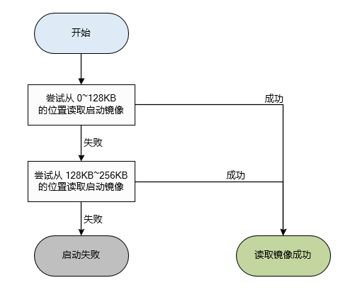

7.9. SPI NOR 启动¶
对于 SPI NOR 设备，预留两个的启动分区，用于保存第一级引导程序，每个分区大小 128KB。 启动时， BROM 首先尝试从第一个分区读取启动镜像，如果检验失败则尝试从第二个分区读取启动镜像。如果都失败，则从该设备启动失败。
区域 |
大小位置 |
|---|---|
Partition0 |
128KB (0~128KB) |
Partition1 |
128KB (128KB~256KB) |
…… |
…… |

图 7.10 SPI NOR 启动流程¶
注解
Partition1 并不是必须的，方案可根据实际情况安排该区域的用途。
7.9.1. 使用限制¶
32MB 或者以上的 SPI NOR 支持通过配置非易失性寄存器的方式设置上电/Reset 默认进入 4 字节地址模式。 由于各家的配置方式会有不同，BROM 无法兼容该配置，因此 BROM 不支持默认 4 字节地址模式。
使用限制：
确保 SPI NOR 上电默认为 3 字节地址模式
如果 Bootloader 或者 Kernel 需要使用 4 字节地址模式，应该在对应的驱动中，通过发送命令的方式切换模式